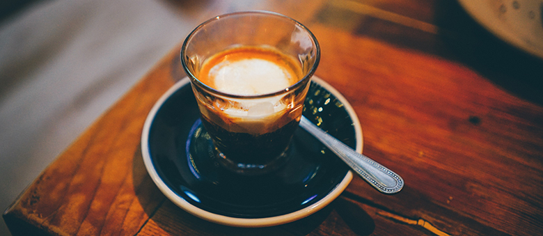

Macchiato

Care este acel lucru care descrie cel mai bine gastronomia italiană? Gustul. Acel gust surprinzător provenit din simplitatea asocierii ingredientelor. Cafeaua pe care italienii o servesc se bucură de același atribut. Gândiți-vă doar cum espresso, o băutură atât de mică și simplă pate fi atât de gustoasă, într-un strop este o furtună de arome.
Iar de la un espresso se pot face nenumărate variante de băuturi adăugând în plus doar lapte. Una dintre aceste minunate posibilități de îmbinare a cafelei pure din espresso cu gustul catifelat al laptelui este Macchiato. Mai puțin cunoscut decât Cappuccino și mai rar vândut decât Latte, Macchiato este preferatul multora pentru că aduce doar un strop de lapte în bunătatea cafelei.
Ce este un Macchiato și cum putem face unul cu adevărat bun? Ce instrumente și ingrediente ne ajută? Dar și ce diferență este între Espresso Macchiato și Latte Macchiato, toate aceste amănunte se vor regăsi în rândurile de mai jos.
Macchiato vine de la verbul din italiană „macchiare”, ce înseamnă a păta, a marca, iar „macchiato” se traduce prin pătat sau marcat. Aceasta ne spune multe și despre cantități: laptele trebuie doar să „păteze” cafeaua din ceașcă.
Despre cappuccino se știe că a apărut cam în același timp cu espresso, doar că italienii, inventatorii săi considerau cappuccino o băutură destinată copiilor sau micului dejun, datorită cantității sale mari de lapte. Drept urmare, macchiato a apărut ca o necesitate, un truc născocit de către acei bărbați care nu doreau să bea un espresso simplu și aveau nevoie de un pic de lapte pentru a-l „îndulci”. Astfel aceștia puteau comanda un espresso cu o „pată” de lapte, ceea ce nu era privit cu indignare și de multe ori putea chiar trece neobservat.
De-a lungul timpului Macchiato a devenit o cafea din ce în ce mai apreciată, iar azi se situează pe locul 3 în topul preferințelor legate de cafea din întreaga lume. Acea picătură de lapte este „vinovată” pentru răspândirea sa în întreaga lume. Macchiato a ajuns și peste ocean, iar azi cafeaua cu acest nume servită în cafenelele americane este diferită chiar de rețeta originală.
Un Macchiato după rețeta clasică italiană este realizată dintr-un espresso simplu (se poate și dublu dacă preferați) la care se adaugă o linguriță de spumă în crema rezultată după prepararea espresso-ului.
©Copy 2021
author@gmail.com, 077668899